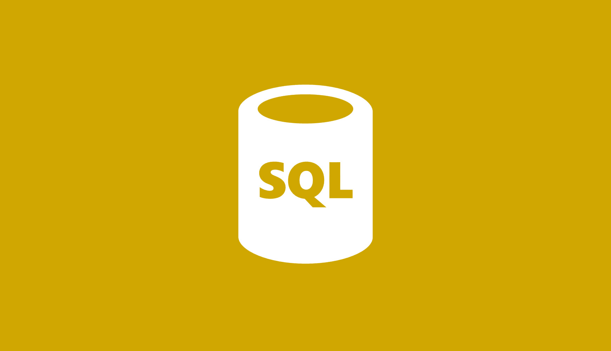
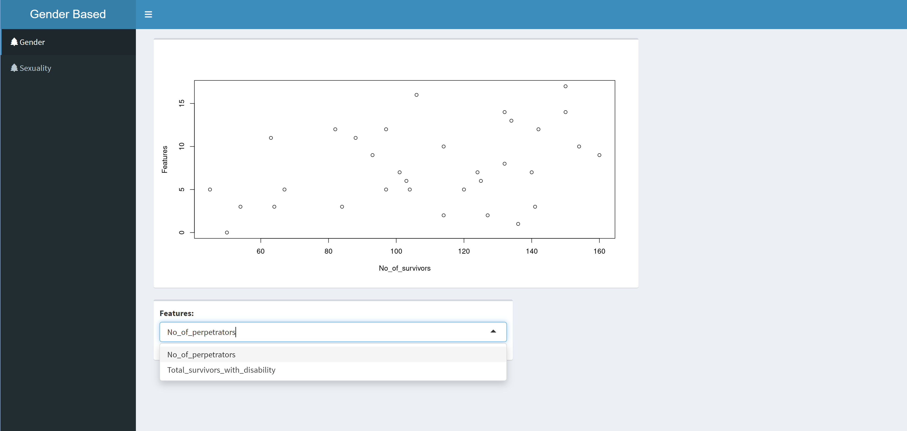
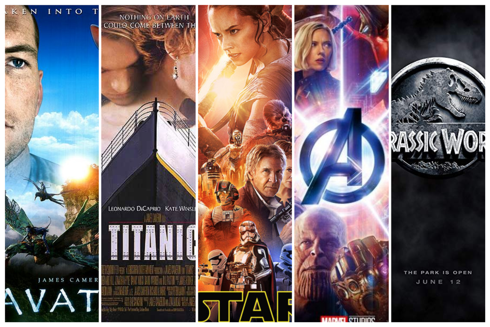
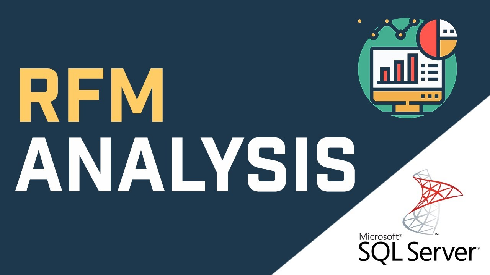

In this project I take raw housing data and transform
it in SQL Server to make it more usable for analysis. The housing data focuses on Nashville housing aspects.
SQL is used strictly for data cleaning purposes; to showcase my skills and ability to standardize dirty data for efficiency and ease of use.


The Covid-19 pandemic was a really serious outbreak that cost lives and affected the economy negatively, thus, public communication is needed for the audience and the government to make impactful decisions on this pandemic.
In this project we use SQL Server i.e. Microsoft SQL Server Management Studio to explore global COVID 19 data.

The focus on this particular project was on correlation of data between number of survivors and number of perpetrators in Nakuru county, Kenya. The dataset contains information on cases of gender based violence reported in Nakuru county from the year 2014 to 2016 (September)

Tableau Dashboards for projects on COVID 19 and how the relationship between the deaths and rates of vaccinations can be clearly seen. The Covid-19 Vaccination dashboard is an illustration of how you can leverage Tableau for gathering information on different data.

Is the movie industry encountering monopoly? What is the relationship between movie budget and the gross outcome ? Those were the first questions that lead me to create a dataset
focused on movie revenue and analyze it over the last decades. But, why stop there? There are more factors that intervene in this
kind of thing, like genres, user ratings and more.In this project we look at what variables effect the gross revenue from movies.
The basis of this project is to show different skillset used with Python to analyze the movie industry data.

Using this powerful business analytics tool to make visuals and share insights. The data used in this project is an accounting data stored in CSV file and has already been cleaned and easy for projections.
Different skillsets have been used for this Power BI dashboard including DAX queries and PowerQuery. These help transform the data for easier manipulation and visualization.

In this project, I walk through the data cleaning process and dashboard creation in Excel. Skills used include powerquery and conditional formatting.

Customer and customer behavior analysis is critical for business development. it is essentials to have customer retention metrics handy.
We will calculate the customer retention metrics along with sales using SQL.